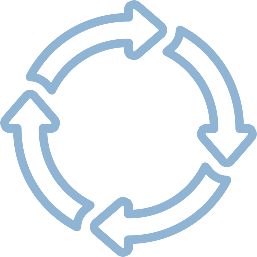
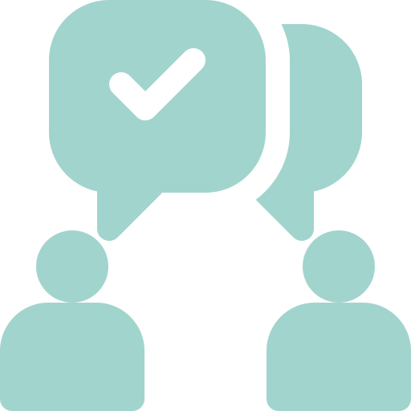
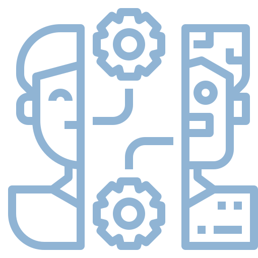

OneDeakin template features
The OneDeakin template is full of features that help you advance the narrative and make learning and teaching happen.
The CloudDeakin DLF Apps site contains information on all the template features, and how and when to use them. Accessing this site requires a simple two step process.
Step 1: Use this form to be enrolled in the CloudDeakin DLF Apps site.
Step 2: Only after you have enrolled in Step 1 above, you can then access the DLF Apps site or search for 'DLF Apps' in the Sites Grid Menu.
OneDeakin Template Colours
Define the OneDeakin Template colour by using the Heading3 'teal', 'turquoise', 'orange' or 'pink'.
When your page is published, this Heading3 will be removed from view. It it important that this first Heading3 remains in the OneDeakin template.
Bias refers to any form of preference leading to a judgement or decision. Some biases can be automatic and unconscious, such as when decisions are based on heuristics, when the brain has created mental shortcuts, that it is hard to detect by the person making those decisions. Biases can cause problematic situations for humans and equally so for AI/machine learning.
The following example from Blackman (2022, p.42) demonstrates how human bias affects AI or machine learning.
An organisation was using a resume-reading AI system/tool to select candidates for interviews based on the information in their resumes. The AI tool was trained by inputting the data of resumes of successful applicants from the previous 10 years in the organisation. The AI tool was trained to look for patterns that a person would be ‘ideal’ for an interview. The results from the AI tool led to interviews of the following people who applied:
The results may or may not seem surprising to you; It appears that the AI tool developed by the organisation is biased against women, Black men and Black women in particular. This bias has created an ‘unfair’ result against our efforts to achieve a more egalitarian society.
How does an AI tool develop these biases
The resume AI tool and other real-life examples have shown that AI biases comes from human prejudices as machine learning originates from the input of data. Biases in AI systems or tools can arise from:
The ‘racist soap dispenser’ was an example where bias was introduced into a product that went on the market. A soap dispenser was designed and ‘trained’ to automatically dispense soap when it sensed a hand in close proximity, and it reflected light back to the sensor. However, once it hit the market it was found that it would only dispense soap to light skinned hands. As it turned out the designers were all white and unknowingly trained the ‘dispenser’ not to detect darker complexions which absorb more of this light rather than reflect it back. Apart from creating controversy on social media, this was a costly error for the company to redesign and produce a ‘non-racist’ soap dispenser!
Watch this short video below to see the ‘racist soap dispenser’ after it was installed in public bathroom. If you have ever had a problem grasping the importance of diversity in tech and its impact on society, watch this video.
Minimising bias in AI systems not only allows people to fully participate in society it is required for people to place their trust in the system. By understanding and identifying that biases may be present in a process/product is the first step to mitigating the bias and deciding on bias-mitigation strategy.
Below are 6 potential ways to help mitigate AI bias recommended by Silberg and Manyika (2019).
1. Be aware of contexts in which Al can help correct for bias and those in which there is high risk for Al to exacerbate bias

2. Establish processes and practices to test for and mitigate bias in Al Systems

3. Engage in fact-based conversations about potential biases in human decisions

4. Fully explore how humans and machines can best work together
5. Invest more in bias research, make more data available for research (while respecting privacy), and adopt a multidisciplinary approach
6. Invest more in diversifying the Al field
Although the steps in the above image appears to show a clear path to minimise bias, bias mitigation is not so straightforward. Tech firms use various types of metrics and definitions of fairness to use to compare the outputs of various machine learning models to test for bias or discrimination. Each of these metrics needs to be fair by producing less biased outputs but also compatible for the result you are trying to achieve so that the ‘right’ people get the interview or the house loan.
To make the algorithms less prone to bias you could decide to remove the labels such as ‘sex’ or ‘race’. However, removing these classes or data sets may not give you the "optimal" results. For example when screening people who are at risk for diabetes, both sex and race are useful, as diabetes presents differently in both sex and race.
And there are issues with quantitative metrics as they are not compatible with each other. An example of this is the case of the AI tool COMPAS, developed by a private company to predict whether a criminal would reoffend, by assigning individuals with a risk score which are used to inform judges for the sentencing of these people.
Have a look at the prior offence and the risk score that COMPAS had assigned these defendants following their arrest for drug possession and petty theft. Read the following scenarios with the individuals’ offenses and try and work what level of Risk from Low (1) to High (10) that AI allocated to them.
Use the arrows to move between cards and the turn button to reveal the answer.
Source: https://www.propublica.org/article/machine-bias-risk-assessments-in-criminal-sentencing
ProRebulica, a non-profit newsroom, claimed that Northpointe, the developers of COMPAS, had incorrectly labelled African-American’s to be labelled as ‘high risk’ almost double to that of white defendants being mislabelled. Blackman (2022) discusses this disparity, suggesting that COMPAS used legitimate quantitative metrics to ‘maximise’ true positives, scenario 1, whereas ProPublica used metrics to minimise false positives, scenario 2.
Scenario1: The AI tool provides risk rating scores on defendants to recommend to judges. It avoids charges of discrimination by pointing out that it was using a perfectly legitimate quantitative metric for fairness. More specifically, the system aimed at maximising its true positive rate across Black and White defendants. The assumption behind it is relatively simple: it’s really bad to let people who are likely to reoffend go free. The better we are at identifying those, the better it is. In this case, the AI system wants to maximize true positives (therefore it may have increased the likelihood of returning false positives).
Scenario 2: The assessment of the AI system's performance uses a different quantitative metric for fairness: the rate of false positives across White and Black defendants. The idea behind this is also simple: it’s really bad to put people who are unlikely to reoffend in jail. The better we are at not unnecessary jailing people, the better we do. In this case, ProPublica wants the AI to minimize false positive (but this may decrease true positives).
The above scenarios show that metrics for bias identification and mitigation using technical tools alone cannot ensure ethical concerns are addressed. The tools can tell how various tweaks to AI leads to different scores according to different fairness metrics, they cannot however suggest which metrics will maximise fair outcomes. This can result in a lot of ethical concerns. Therefore, ethical judgement needs to be made by humans who are qualified to deal with ethical issues. Data scientists and AI engineers are often ill-equipped to answer the question: which, if any, of these quantitative metrics of fairness are the ethical or appropriate ones to use?
we'll discuss these two scenarios in more depth in class